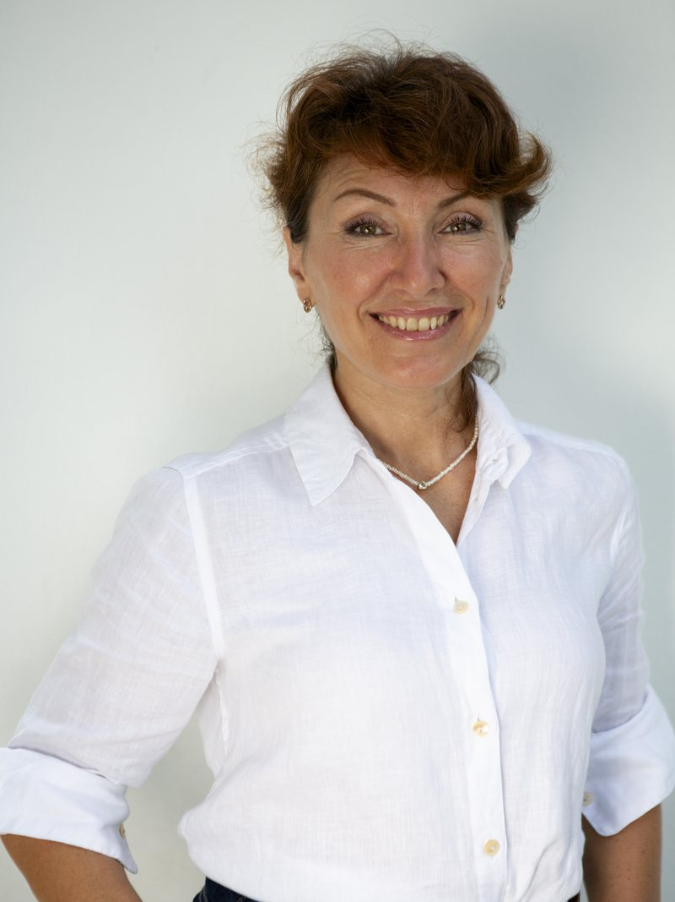

Ольга Сальникова
Куратор Y2–Y3
Ольга сопровождает детей в первые школьные годы: помогает освоиться, почувствовать себя увереннее и найти в классе первых друзей. Дети постепенно включаются в учебный процесс и становятся самостоятельнее — а родители видят, как проходит этот период, и могут быть спокойны за ребёнка.
Более 15 лет педагогического опыта, начиная от младшего дошкольного возраста и до начальной школы. С 2015 года Ольга работает в Kinderville, и для многих детей и их родителей стала любимым педагогом. В её опыте — успешная адаптация детей к школе, индивидуальная поддержка, выстраивание дружеских и тёплых отношений в детском коллективе, а также развитие навыков чтения, письма, счёта, устной речи.
Высшее образование по специальности «Социальная педагогика», диплом с отличием.
Курсы повышения квалификации в области обучения чтению и письму, начальной педагогики.